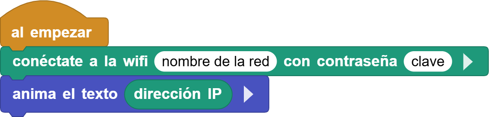
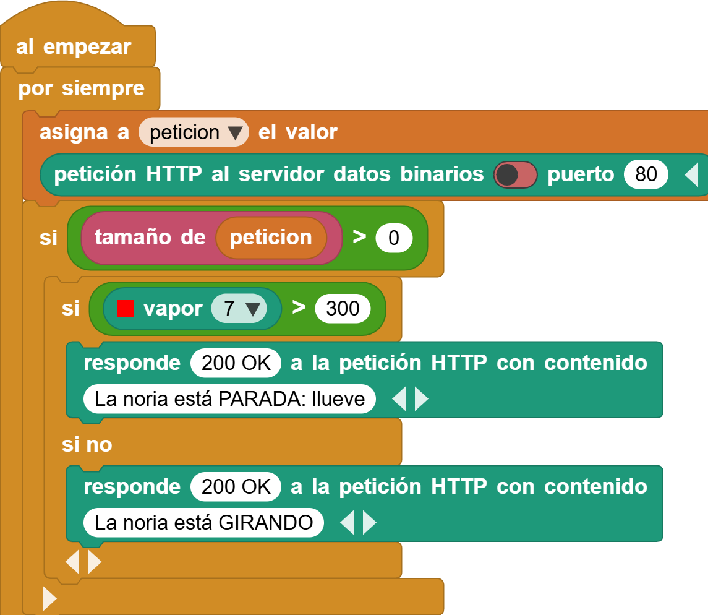

Reto experto · La noria conectada
Controla tu máquina desde el móvil
Tu misión
¿Qué es el Internet de las cosas?
Cada vez más objetos están conectados: relojes, termostatos, frigoríficos, semáforos… Tienen un pequeño ordenador con WiFi, como tu placa kidsIOT, que envía datos y recibe órdenes.
 Cómo viaja la información
Cómo viaja la información
1 Conecta la placa a la WiFi
Añade la librería WiFi. Escribe el nombre de la red y su contraseña:

Apunta la dirección IP que aparece en la pantalla (por ejemplo, 192.168.1.37).
2 Responde al móvil
Añade la librería del servidor web (HTTP). Cuando el móvil pida la página, la placa contestará con el estado:

Abre el navegador del móvil (conectado a la misma red) y escribe la dirección IP.
Predice, prueba y explica
- Predice: ¿funcionará si el móvil usa datos móviles en vez de la WiFi del cole?
- Prueba: compruébalo.
- Explica: ¿por qué tienen que estar en la misma red?
Niveles del reto
Elige tu nivel. Puedes empezar por el básico y subir cuando lo consigas.
| Básico | Ver en el móvil si la noria gira o está parada. |
| Medio | Mostrar también el número del sensor de vapor. |
| Experto | Añadir dos enlaces en la página, «Parar» y «Arrancar», para manejar la noria desde el móvil. Sin pistas: ¡tú decides cómo! |
 Seguridad en la red
Seguridad en la red
- Usa la red que te indique tu docente; nunca escribas contraseñas de casa en el programa si vas a compartirlo.
- Cualquiera en la misma red podría abrir tu página: no muestres datos personales.
 Para el docente
Para el docente
- El programa usa las librerías WiFi y HTTP server de MicroBlocks. La placa contesta a cualquier dirección que se pida en su IP. Conviene probarlo con la red del centro antes de la sesión.
- Muchas redes de centros educativos aíslan los dispositivos entre sí o bloquean el acceso: suele funcionar mejor un punto de acceso del móvil del docente al que se conecten la placa y los móviles.
- La noria usa el sensor de vapor en el puerto 7 (io35, ADC1), compatible con el WiFi activo. Los pines del ADC2, como el 4, no leen valores analógicos con el WiFi encendido.
- Alternativa sin red local: MicroBlocks permite enviar datos a servicios MQTT o a la librería de control remoto por WiFi.
Ábrelo en MicroBlocks arrastrando el archivo a la ventana o con Archivo › Abre.